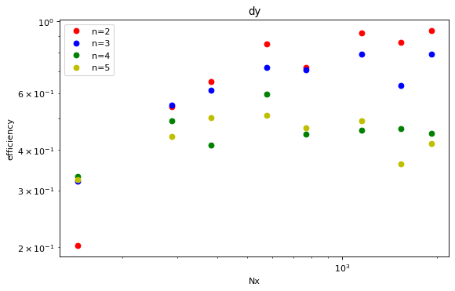

Explore the data-files in the repository and familiarize with pandas
Explore the data-files in the repository and familiarize with pandas¶
import numpy as np
import pandas as pd
import matplotlib.pyplot as plt
Make a map that assigns the total number of memory operations per element to a given algorithm
memops = {'scal':2, 'axpby':3, 'pointwiseDot':6, 'dot':2, 'dx':3, 'dy':3,
'arakawa':34, 'cg':42}
Now, let’s read in one of the csv files (actually they are “whitespace seperated values”) and compute the bandwidth from the time measurements, vector size and the memory operations
#read in csv file
df1 = pd.read_csv('benchmark_skl_mpi1.csv', delimiter=' ')
#add size and get rid of non-relevant columns
df1.insert(0,'size', 8*df1['n']*df1['n']*df1['Nx']*df1['Ny']/1e6)
for name, mem in memops.items():
df1[name] = df1['size']/1000*mem/df1[name]
dfr = df1[['n','Nx','Ny','size']+list(memops.keys())]
dfr
| n | Nx | Ny | size | scal | axpby | pointwiseDot | dot | dx | dy | arakawa | cg | |
|---|---|---|---|---|---|---|---|---|---|---|---|---|
| 0 | 2 | 144 | 144 | 0.663552 | 314.478876 | 416.429966 | 524.460662 | 56.162541 | 97.585482 | 39.256309 | 138.435948 | 126.542938 |
| 1 | 2 | 288 | 288 | 2.654208 | 1203.520498 | 1272.291559 | 1633.536364 | 115.879737 | 183.928301 | 117.065735 | 308.217740 | 227.802475 |
| 2 | 2 | 384 | 384 | 4.718592 | 1953.722704 | 2088.414692 | 1985.410174 | 137.448463 | 198.315441 | 143.189693 | 367.836204 | 248.862136 |
| 3 | 2 | 576 | 576 | 10.616832 | 2892.511146 | 2698.805765 | 1293.980788 | 140.424998 | 207.967927 | 189.350724 | 359.265776 | 312.356009 |
| 4 | 2 | 768 | 768 | 18.874368 | 3349.488554 | 541.433391 | 595.559361 | 157.659528 | 86.322418 | 106.536537 | 290.893499 | 244.174862 |
| ... | ... | ... | ... | ... | ... | ... | ... | ... | ... | ... | ... | ... |
| 315 | 5 | 576 | 576 | 66.355200 | 1351.859247 | 361.280581 | 246.226615 | 189.578161 | 126.820840 | 112.297043 | 147.858988 | 161.701097 |
| 316 | 5 | 768 | 768 | 117.964800 | 457.724662 | 231.659346 | 223.125189 | 185.692383 | 116.749053 | 103.895909 | 139.584366 | 150.029270 |
| 317 | 5 | 1152 | 1152 | 265.420800 | 227.990465 | 218.867049 | 207.946746 | 187.211376 | 123.177679 | 107.402446 | 141.847240 | 118.064374 |
| 318 | 5 | 1536 | 1536 | 471.859200 | 202.428668 | 207.751258 | 205.269221 | 104.123644 | 96.821422 | 78.527590 | 124.321659 | 133.102875 |
| 319 | 5 | 1920 | 1920 | 737.280000 | 144.215478 | 179.177603 | 203.338037 | 188.251876 | 123.057750 | 90.144151 | 133.416645 | 139.521228 |
320 rows × 12 columns
We want to aggregate the results with the same input parameters n, Nx, Ny
#compute mean and standard derivation of 'same' groups
dfr=dfr.groupby(['n', 'Nx','Ny','size']).agg(['mean', 'std'])
dfr=dfr.reset_index(level=['n','Nx','Ny','size'])
#dfr['axpby']
Here, we compute the efficiency of the operations
base_bandwidth = dfr[('axpby','mean')].iloc[15] # base bandwidth at 3 2048 2048
for name, mem in memops.items():
dfr[(name,'eff')]= dfr[(name,'mean')]/base_bandwidth
dfr[(name,'eff_err')]=dfr[(name,'std')]/base_bandwidth
#now display all bandwidth results
cols=[(m,'eff') for m in memops.keys()]
efficiency=dfr[['n','Nx','Ny','size']].join( dfr[cols])
cols=[(m,'eff_err') for m in memops.keys()]
efficiency=efficiency.join( dfr[cols])
#dfr=dfr.sort_values(by='size')
#efficiency=efficiency.set_index('size')
pd.set_option('precision',2)
efficiency=efficiency.sort_values(by='size')
#efficiency.loc[:,'size']
efficiency.iloc[0:20]
| n | Nx | Ny | size | scal | axpby | pointwiseDot | dot | dx | dy | arakawa | cg | scal | axpby | pointwiseDot | dot | dx | dy | arakawa | cg | |
|---|---|---|---|---|---|---|---|---|---|---|---|---|---|---|---|---|---|---|---|---|
| eff | eff | eff | eff | eff | eff | eff | eff | eff_err | eff_err | eff_err | eff_err | eff_err | eff_err | eff_err | eff_err | |||||
| 0 | 2 | 144 | 144 | 0.66 | 1.44 | 2.19 | 2.88 | 0.25 | 0.42 | 0.20 | 0.65 | 0.61 | 0.03 | 0.13 | 0.30 | 2.10e-02 | 7.98e-02 | 8.87e-03 | 1.38e-02 | 2.37e-02 |
| 8 | 3 | 144 | 144 | 1.49 | 3.16 | 5.03 | 6.83 | 0.46 | 0.84 | 0.32 | 0.89 | 0.80 | 0.92 | 0.14 | 0.18 | 6.79e-03 | 4.62e-02 | 4.47e-03 | 5.07e-03 | 5.07e-03 |
| 1 | 2 | 288 | 288 | 2.65 | 5.53 | 6.70 | 7.77 | 0.57 | 0.85 | 0.54 | 1.42 | 1.10 | 0.06 | 0.46 | 0.20 | 2.50e-02 | 3.30e-02 | 6.81e-03 | 1.07e-02 | 4.95e-02 |
| 16 | 4 | 144 | 144 | 2.65 | 5.54 | 6.52 | 7.69 | 0.55 | 0.65 | 0.33 | 0.92 | 0.76 | 0.09 | 1.10 | 0.23 | 5.95e-02 | 2.42e-02 | 1.88e-03 | 1.11e-02 | 1.44e-02 |
| 24 | 5 | 144 | 144 | 4.15 | 7.59 | 10.87 | 11.24 | 0.66 | 0.63 | 0.32 | 0.80 | 0.74 | 0.13 | 0.12 | 0.18 | 2.57e-02 | 2.75e-02 | 1.67e-03 | 3.84e-03 | 5.63e-03 |
| 2 | 2 | 384 | 384 | 4.72 | 8.84 | 9.51 | 9.19 | 0.69 | 0.91 | 0.65 | 1.68 | 1.22 | 0.20 | 0.27 | 0.34 | 3.64e-02 | 1.66e-02 | 3.16e-03 | 1.32e-02 | 5.82e-02 |
| 9 | 3 | 288 | 288 | 5.97 | 9.92 | 10.17 | 9.73 | 0.70 | 0.80 | 0.55 | 1.31 | 1.05 | 0.15 | 0.49 | 0.49 | 2.35e-02 | 1.94e-02 | 3.11e-03 | 1.32e-02 | 1.95e-02 |
| 3 | 2 | 576 | 576 | 10.62 | 12.80 | 11.92 | 5.94 | 0.67 | 0.94 | 0.85 | 1.68 | 1.45 | 0.67 | 0.50 | 0.97 | 2.72e-02 | 2.48e-02 | 1.43e-02 | 2.77e-02 | 2.66e-02 |
| 17 | 4 | 288 | 288 | 10.62 | 12.91 | 12.25 | 6.06 | 0.68 | 0.73 | 0.49 | 1.07 | 1.06 | 0.18 | 0.42 | 0.82 | 4.33e-02 | 1.08e-02 | 2.67e-03 | 1.05e-02 | 8.21e-02 |
| 10 | 3 | 384 | 384 | 10.62 | 12.97 | 12.24 | 6.05 | 0.69 | 0.81 | 0.61 | 1.29 | 1.26 | 0.21 | 0.38 | 0.89 | 2.34e-02 | 2.23e-02 | 4.82e-03 | 2.20e-02 | 1.81e-02 |
| 25 | 5 | 288 | 288 | 16.59 | 14.86 | 12.29 | 3.21 | 0.78 | 0.60 | 0.44 | 0.81 | 0.86 | 0.10 | 3.22 | 0.38 | 2.44e-02 | 1.00e-02 | 5.58e-03 | 2.16e-02 | 2.40e-02 |
| 4 | 2 | 768 | 768 | 18.87 | 15.10 | 2.47 | 2.98 | 0.79 | 0.40 | 0.72 | 1.31 | 1.13 | 0.44 | 0.04 | 0.16 | 5.68e-02 | 2.80e-03 | 8.21e-02 | 3.37e-02 | 1.56e-02 |
| 18 | 4 | 384 | 384 | 18.87 | 15.20 | 2.50 | 2.90 | 0.81 | 0.34 | 0.41 | 0.83 | 0.86 | 0.22 | 0.02 | 0.23 | 3.00e-02 | 5.37e-04 | 2.38e-03 | 3.18e-02 | 6.27e-03 |
| 11 | 3 | 576 | 576 | 23.89 | 16.12 | 9.12 | 2.49 | 0.81 | 0.85 | 0.72 | 0.97 | 1.01 | 0.15 | 2.96 | 0.11 | 4.68e-02 | 5.69e-03 | 2.78e-03 | 6.91e-03 | 1.43e-02 |
| 26 | 5 | 384 | 384 | 29.49 | 12.76 | 4.82 | 1.72 | 0.81 | 0.59 | 0.50 | 0.68 | 0.78 | 2.41 | 1.14 | 0.07 | 3.91e-02 | 7.62e-03 | 3.21e-02 | 5.89e-03 | 1.13e-02 |
| 12 | 3 | 768 | 768 | 42.47 | 9.24 | 3.37 | 1.26 | 0.85 | 0.80 | 0.71 | 0.87 | 0.94 | 1.07 | 0.66 | 0.03 | 4.37e-02 | 1.70e-02 | 1.15e-02 | 7.37e-03 | 6.82e-03 |
| 19 | 4 | 576 | 576 | 42.47 | 8.93 | 3.69 | 1.27 | 0.85 | 0.72 | 0.60 | 0.77 | 0.84 | 1.83 | 0.37 | 0.02 | 4.74e-02 | 9.94e-03 | 1.09e-02 | 7.72e-03 | 6.55e-03 |
| 5 | 2 | 1152 | 1152 | 42.47 | 8.01 | 3.92 | 1.25 | 0.83 | 0.97 | 0.92 | 0.97 | 1.04 | 2.78 | 0.31 | 0.03 | 8.50e-02 | 1.50e-02 | 5.11e-03 | 1.33e-02 | 5.36e-03 |
| 27 | 5 | 576 | 576 | 66.36 | 4.64 | 1.99 | 1.11 | 0.83 | 0.58 | 0.51 | 0.67 | 0.73 | 1.37 | 0.14 | 0.02 | 2.51e-02 | 2.74e-03 | 3.78e-03 | 4.70e-03 | 3.24e-03 |
| 6 | 2 | 1536 | 1536 | 75.50 | 5.02 | 1.62 | 1.07 | 0.80 | 0.88 | 0.86 | 0.86 | 0.92 | 0.63 | 0.10 | 0.02 | 4.04e-02 | 1.89e-02 | 3.70e-02 | 2.64e-02 | 1.29e-02 |
Let us try and make our first plot
fig=plt.figure()
#print(efficiency)
toPlot=efficiency['dy'].join(efficiency['size'])
ax = toPlot.plot(style='ro',x='size',y='eff',yerr='eff_err')
toPlot=efficiency['dx'].join(efficiency['size'])
ax = toPlot.plot(style='ro',x='size',y='eff',yerr='eff_err',ax=ax)
toPlot=efficiency['dot'].join(efficiency['size'])
ax = toPlot.plot(style='ro',x='size',y='eff',yerr='eff_err',ax=ax)
plt.xscale('log')
plt.yscale('log')
ax.legend(['dy','dx','dot'])
<matplotlib.legend.Legend at 0x7fd20f30d7f0>
<Figure size 432x288 with 0 Axes>
fig,ax=plt.subplots(1,1,figsize=(8,5),dpi= 80, facecolor='w', edgecolor='k')
plotlist = [('dy','eff')]
stylelist = ['ro','bo','go','yo']
#efficiency.iloc[8:24].plot(x=('size',''),y=[('cg','eff'),('arakawa','eff')],style=['ro','bo'],logx=True)
efficiency[efficiency['n']==2].plot(ax=ax, x=('Nx',''),y=plotlist,style=stylelist[0])
efficiency[efficiency['n']==3].plot(ax=ax, x=('Nx',''),y=plotlist,style=stylelist[1])
efficiency[efficiency['n']==4].plot(ax=ax, x=('Nx',''),y=plotlist,style=stylelist[2])
efficiency[efficiency['n']==5].plot(ax=ax, x=('Nx',''),y=plotlist,style=stylelist[3])
#plt.loglog()
plt.title(plotlist[0][0])
plt.xscale('log')
plt.yscale('log')
plt.ylabel('efficiency')
plt.xlabel('Nx')
plt.legend(['n=2','n=3','n=4','n=5'])
plt.show()
#base_bandwidth
